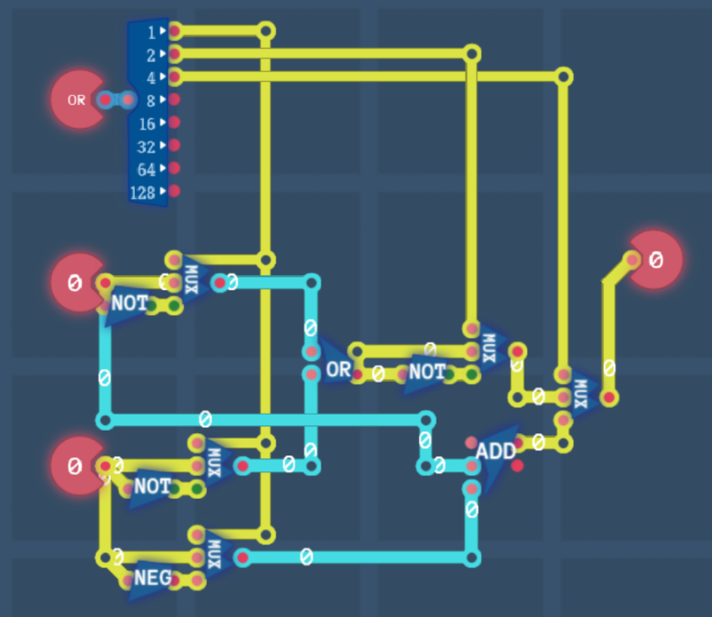
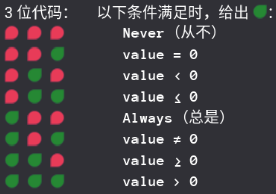
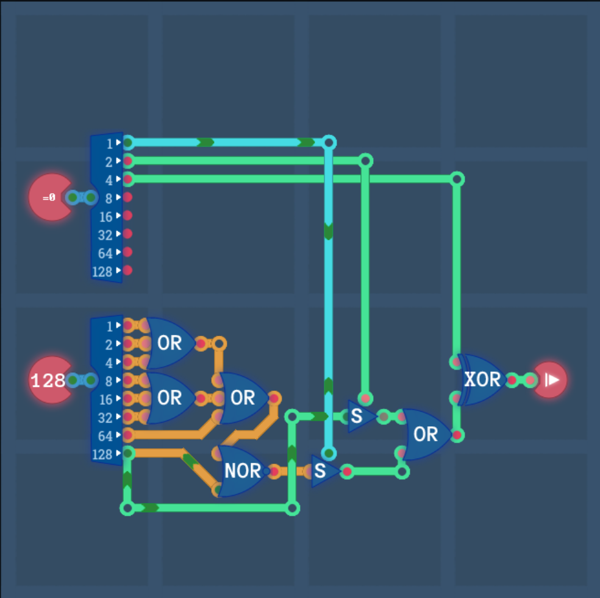

图灵完备⚓︎
以防有人不知道
2025.06.07：图灵完备全成就！
下面是我手搓 CPU 时的一些笔记，感觉主要还是备忘录性质，不然过一个月连自己当初 opcode 咋设计的都不知道了。
第三章：处理器架构⚓︎
3-1 算数引擎（Arithmetic Logic Unit，算术逻辑单元 ALU）⚓︎
目前我们实现的运算分别有：
| 操作码 | 运算 | 含义 |
|---|---|---|
| 00000000 | OR | 或 |
| 00000001 | NAND | 与非 |
| 00000010 | NOR | 或非 |
| 00000011 | AND | 与 |
| 00000100 | ADD | 符号数加 |
| 00000101 | SUB | 符号数减 |
这个操作码的设定很有讲究。我们手头上现有的逻辑门有 8 bit 或门、8 bit 非门，四条逻辑运算分别为：
根据 opcode 的最低位确定是否要将 A、B 取非，然后或起来，再根据 opcode 的次低位决定是否要取非。
而 opcode 的第 \(2\) 位可以判断是逻辑运算还是算术运算，据此分辨开来。

3-2 寄存器之间（Register File，寄存器组 RF）⚓︎
这里我们需要设计寄存器间的数据传输指令系统，支持将 8 bit 数据从源寄存器传到目标寄存器。
我们搭建了 \(6\) 个 8 bit 寄存器，形成了寄存器组。其指令格式如下：
其中 src 是源寄存器地址（3 bit），dst 是目标寄存器地址（3 bit）。地址信息如下：
- \(0\le \text{src}\le 5\)，输入来自 \(\text{reg[src]}\)；
- \(\text{src}=6\)，输入来自输入组件；
- 其余未定义。
这一部分设计比较简单，仔细设定寄存器的使能输入/输出信号即可。
3-3 指令解码器（Instruction Decoder，指令解码器 ID）⚓︎
将输入的 8 bit 指令解码出四种不同的控制状态。
目前指令 Instruction 的高 \(2\) 位是状态信号，具体如下：
这一部分设计也很简单。
3-4 条件判断（condition）⚓︎
这一部分查表，直接暴力判断即可。先用 3-8 Decoder，然后设 \(8\) 个开关，将输出连在一起即可。

对于成就十项条“件”，同样关注到 opcode 的设定很有讲究，具体而言：
- 最低位，判断是否 \(=0\)；
- 次低位，判断是否 \(<0\)，即 num 的最高位；
- 最高位，判断是否将结果取反，即 xor。
设计的电路如下：

3-5 立即数（immediate）⚓︎
其指令格式如下：
将输入传输到 \(\text{reg[0]}\) 即可。
3-6 图灵完备 & 计算单元（Turing Complete & Computation Unit，计算单元 CU）⚓︎
把上述写好的所有东西串起来即可。
程序的这一部分，我们使用之前写好的计数器模块（相当于 PC），PC 的具体跳转方式如下：
- 如果无写入信号，则 PC 自然 +1（PC 以字节计）；
- 如果有写入信号，则 PC 跳转到数值为 \(\text{reg0}\) 的地址。
算术模块如下：
- 要判断的两个数位于 \(\text{reg1},\text{reg2}\)；
- 判断的结果放置到 \(\text{reg3}\)。
立即数模块如下：
- 将输入信号放置到 \(\text{reg0}\)。
条件判断模块如下：
- 如果 \(\text{reg3}\) 满足条件，那么计数器模块的写入信号置为 \(1\)，并且写入数值为 \(\text{reg0}\)。
第四章：编程⚓︎
密码锁⚓︎
迷宫⚓︎
略。
第五章：处理器架构 2⚓︎
现在一条指令变成了 4 字节（32 bit），第一个字节是 opcode，即操作码，指代如下：
| 操作码 | 运算 | 含义 |
|---|---|---|
| xx000000 | ADD | 加 |
| xx000001 | SUB | 减 |
| xx000010 | AND | 与 |
| xx000011 | OR | 或 |
| xx000100 | NOT | 非 |
| xx000101 | XOR | 异或 |
| xx000110 | SHL | 逻辑左移 |
| xx000111 | SHR | 逻辑右移 |
| xx100000 | \(=\) | |
| xx100001 | \(\neq\) | |
| xx100010 | \(<\) | |
| xx100011 | \(\le\) | |
| xx100100 | \(>\) | |
| xx100101 | \(\ge\) |
操作码的第 \(7\) 位为 1 则表示 rs1 为立即数，直接读取第二个字节（8 bit）作为立即数。
操作码的第 \(6\) 位为 1 则表示 rs2 为立即数。
操作码的第 \(5\) 位为 1 则表示 rs1 和 rs2 进入 condtional 模块（即 RISC-V 中的 branch，b-type 类型），并且第一个字节的信息是用于比大小的；操作码的第 \(5\) 位为 0 则表示 rs1 和 rs2 进入 ALU 模块。
第二个字节指代 rs1，第三个字节指代 rs2，第四个字节指代 rd。字节的信息指代如下：
| byte | meaning |
|---|---|
| 00000000 | reg0 |
| 00000001 | reg1 |
| 00000010 | reg2 |
| 00000011 | reg3 |
| 00000100 | reg4 |
| 00000101 | reg5 |
| 00000110 | pc |
| 00000111 | I / O |
| 00001000 | reg_ram |
| 00001001 | ram |